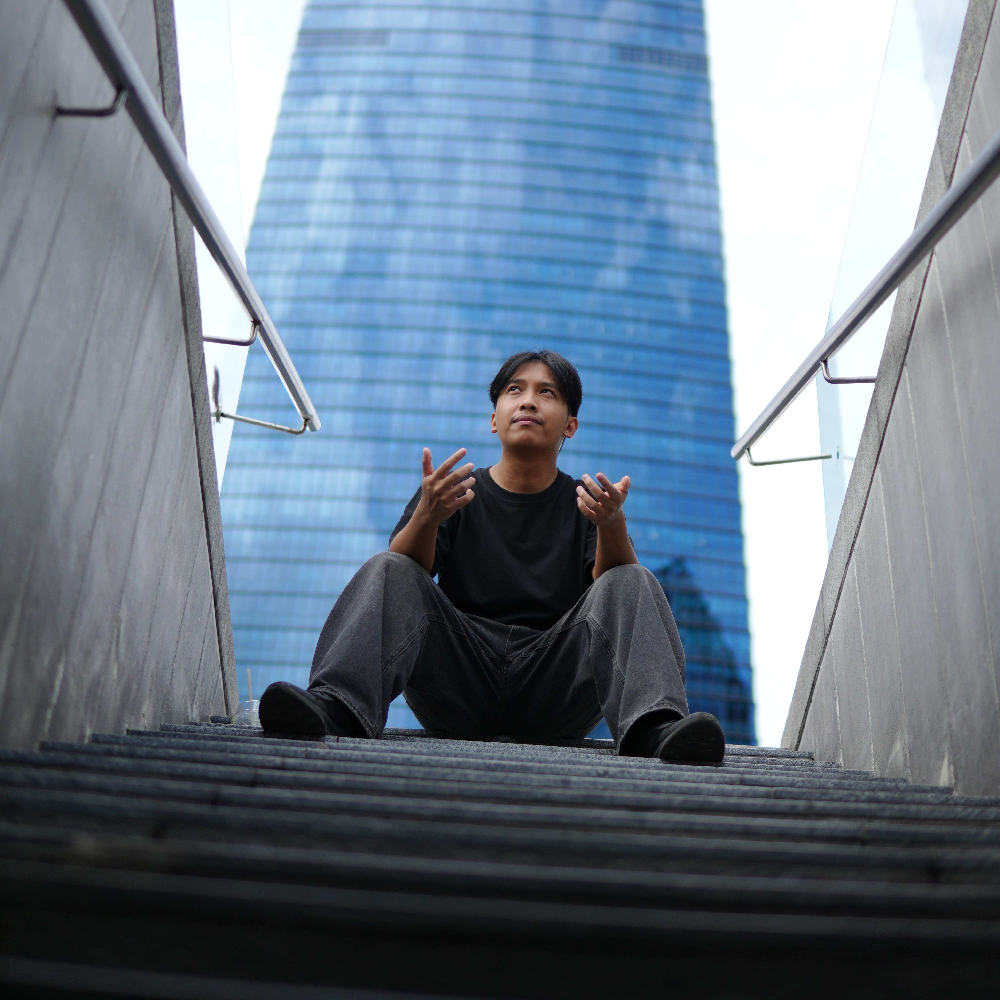

Hey again. I'm Nazrin, a photographer based in Kuala Lumpur.
A student who passionate in photography, capturing moments in Events, Cosplay, Portraits, and Street Photography. My goal is to turn fleeting moments into lasting memories through my lens.
I'm currently available for freelance bookings and collaborations. Feel free to browse my work or get in touch!
